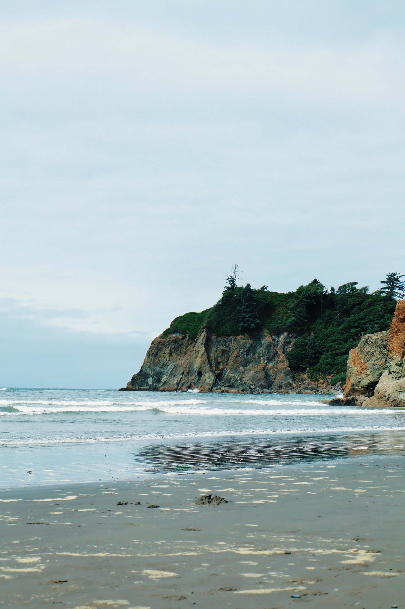
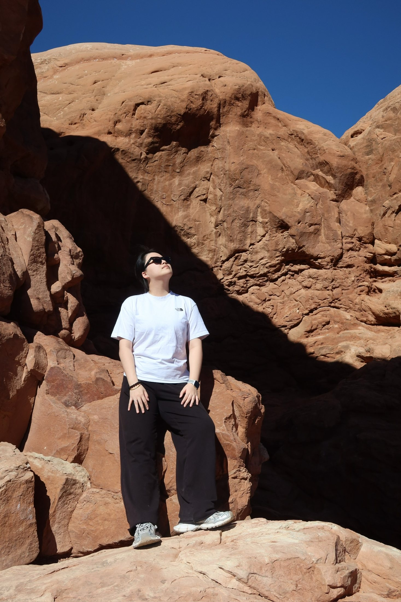
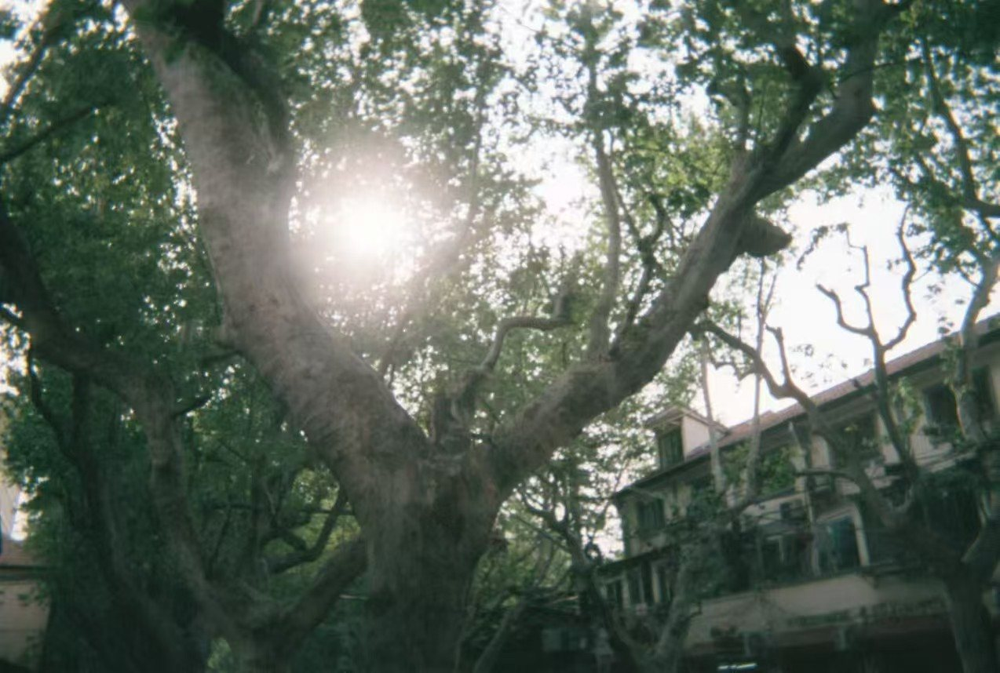
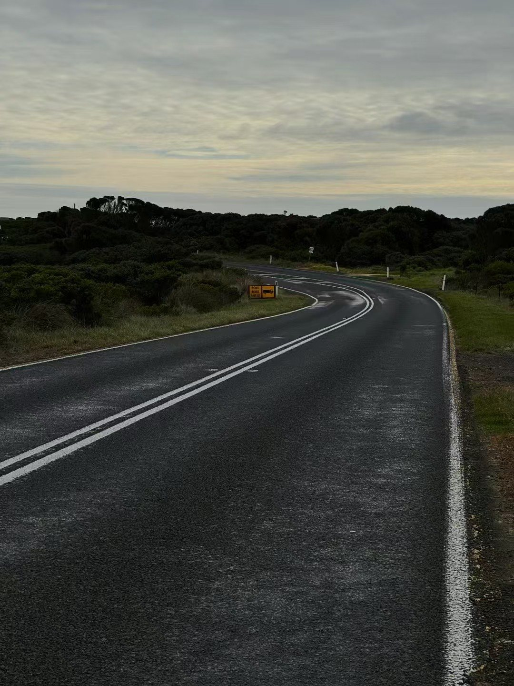
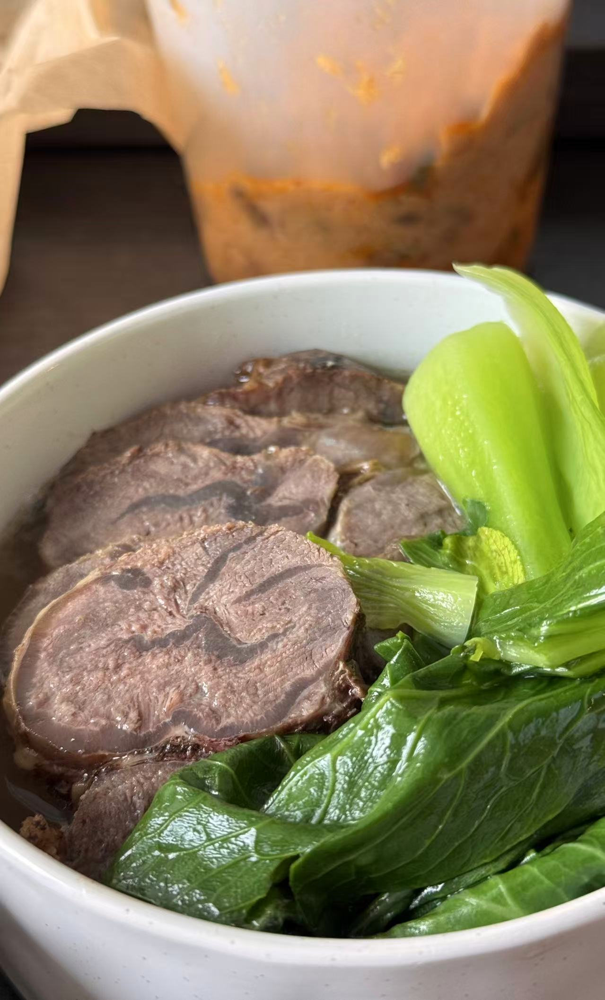

About me
Hi, I’m Grace.
I’m an aspiring Product Designer with a background in Human Centered Design & Engineering, interested in creating digital experiences that balance usability, accessibility, and visual design.
I’ve worked on web apps, interactive prototypes, accessibility-focused products, and design systems. I usually sit somewhere between UX and technology: I enjoy understanding why something feels confusing, turning messy problems into clearer flows, and thinking about how a design can actually work once it’s built.




A few things that keep me curious ↗
In my work
I’m especially interested in products that make technology easier and more inclusive for different people.
A lot of my projects explore accessibility, safety, travel, and everyday experiences — from designing accessible makeup tools to building SafeMic, a concept for safer online gaming spaces, and Trippo, a travel-planning web app.
I also enjoy working beyond the screen. I’ve experimented with physical prototyping, 3D modeling, coding, and interactive systems, which helps me think about products from both a design and implementation perspective.

My process
Usually starts with asking why.
Why does the user have to do this?
Why are we making this assumption?
Why isn’t this kind of design being used in real life already?
I like mapping out flows, finding the awkward parts, testing ideas, and slowly turning something complicated into something that feels simple.
I probably overthink things a little — but in design, that can actually be useful :)
When I’m not designing
You’ll probably find me planning another trip, taking way too many photos, experimenting with something new, playing games, or spending time with my pup.
I also love coming back to some of my old interests — model building, fencing, cooking, and different ball sports. They remind me of where I started, let me reconnect with different sides of myself, and sometimes even give me unexpected inspiration for what I want to create next.

Have a project, idea, or very specific travel recommendation?
Let’s talk